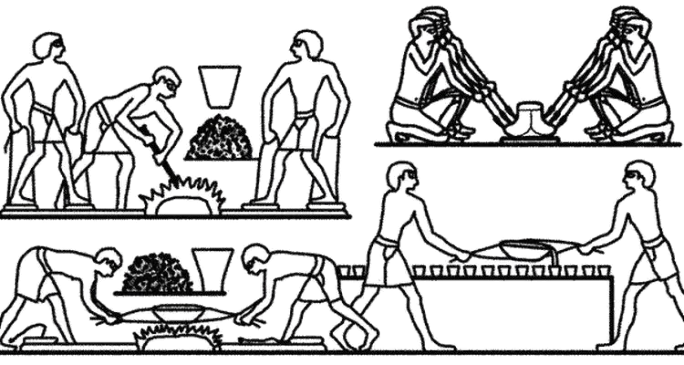
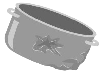

Sua História
ㅤㅤA história do metal é tão antiga quanto a civilização humana. Os primeiros metais a serem utilizados foram o cobre e o ouro, que eram moldados em formas simples para ornamentos e ferramentas. A metalurgia, o processo de extração e manipulação de metais, começou a se desenvolver por volta de 6000 a.C., quando as culturas começaram a fundir e trabalhar com esses materiais. O uso do cobre levou à era do cobre, seguido pela era do bronze, marcada pela combinação de cobre e estanho, que resultou em ferramentas e armas mais duráveis e eficientes.
ㅤㅤA descoberta do ferro, por volta de 1200 a.C., foi um marco na história da metalurgia. O ferro, por ser abundante e acessível, tornou-se o metal de escolha para a fabricação de armas e ferramentas. Com o tempo, técnicas de fundição e forjamento foram aprimoradas, permitindo a criação de objetos cada vez mais complexos e sofisticados. Civilizações como os egípcios, fenícios e romanos dominaram o uso de metais, criando não apenas ferramentas e armas, mas também estruturas arquitetônicas impressionantes, como aquedutos e templos.
ㅤㅤDurante a Revolução Industrial, que começou no final do século XVIII, a produção de metais passou por uma transformação significativa. A introdução de novas tecnologias, como o processo de Bessemer para a produção de aço, permitiu a fabricação em massa de metais com propriedades superiores. O aço tornou-se o material fundamental para a construção de infraestrutura, como ferrovias, pontes e edifícios, mudando a face das cidades e da indústria. A metalurgia moderna não só ampliou as aplicações dos metais, mas também abriu caminho para inovações em engenharia e design.
ㅤㅤHoje, os metais são indispensáveis em praticamente todos os aspectos da vida cotidiana, desde a construção de edifícios até a fabricação de dispositivos eletrônicos. A crescente preocupação com a sustentabilidade e a preservação dos recursos naturais levou a um aumento significativo na reciclagem de metais, permitindo a reutilização de materiais e a redução do desperdício, garantindo assim um futuro mais verde e sustentável.
Composição
ㅤㅤOs metais são compostos principalmente por átomos organizados em uma estrutura cristalina, que lhes confere propriedades únicas como condutividade elétrica e térmica, maleabilidade e dureza. Os metais podem ser classificados em duas grandes categorias: ferrosos e não ferrosos. Os ferrosos, como o ferro e o aço, são conhecidos por sua alta resistência e versatilidade, sendo amplamente utilizados na construção civil e na fabricação de máquinas. Por outro lado, os não ferrosos, como alumínio, cobre e zinco, são valorizados por suas propriedades como leveza, resistência à corrosão e alta condutividade elétrica.
ㅤㅤO processo de fabricação de produtos metálicos inicia-se com a extração do minério de metal, que é processado para remover impurezas e obter o metal puro. As ligas metálicas são frequentemente criadas ao combinar diferentes metais, o que pode melhorar características como durabilidade e resistência ao calor. Por exemplo, a adição de carbono ao ferro resulta em aço, que possui maior resistência e é amplamente utilizado na construção. Após a fusão, o metal é moldado em diversas formas, como chapas, tubos e fios, dependendo das necessidades da indústria.
Tipos de Metal
ㅤㅤExistem muitos tipos de metais, chegando hoje ao total de sessenta e oito. Dentre eles existem alguns bem diferentes, como o mercúrio (que é líquido) e o sódio (que é leve). Os mais conhecidos e utilizados há muitos anos são o ferro, cobre, estanho, chumbo, ouro e a prata.
| Tipo | Aplicações |
|---|---|
| Aço | Usado em construção, fabricação de veículos e eletrodomésticos, devido à sua resistência e durabilidade. |
| Alumínio | Utilizado em embalagens, construção e transporte, por sua leveza e resistência à corrosão, tornando-se ideal para estruturas que exigem baixo peso. |
| Cobre | Amplamente empregado em fiação elétrica e componentes eletrônicos, devido à sua excelente condutividade elétrica e térmica. |
| Ouro | Além de seu valor em joalheria, o ouro é utilizado em eletrônicos, pois não oxida e oferece condução elétrica de alta eficiência. |
| Prata | Valorizada em joalheria e aplicações eletrônicas, a prata tem a mais alta condutividade elétrica entre todos os metais. |
| Ferro Fundido | Comumente utilizado em utensílios de cozinha e peças de máquinas, o ferro fundido é conhecido por sua resistência e durabilidade. |
| Aço Inoxidável | Resistente à corrosão, é utilizado em utensílios, equipamentos médicos e construção, oferecendo durabilidade e estética. |
| Ligaduras Metálicas | Usadas em diversas aplicações, combinando propriedades de diferentes metais para atender a necessidades específicas, como resistência e leveza. |
| Titânio | Conhecido por sua leveza e resistência, é utilizado em aeroespacial, implantes médicos e equipamentos esportivos, oferecendo desempenho superior. |
| Metal reciclado | Usado na fabricação de novos produtos, reduzindo a necessidade de extração de minério e promovendo a sustentabilidade. |
Como Funciona a Reciclagem de Metais
ㅤㅤA reciclagem de metais é um processo crucial para a conservação dos recursos naturais e a redução do impacto ambiental. O primeiro passo é a coleta de metais usados, que pode incluir latas, fios, peças de automóveis e outros produtos metálicos. A separação adequada é vital, pois diferentes metais possuem propriedades e processos de reciclagem distintos. É importante evitar a contaminação com materiais que não são recicláveis, como plásticos e resíduos orgânicos.
ㅤㅤApós a coleta, os metais são levados a centros de reciclagem, onde são classificados e processados. Nesse estágio inicial, os materiais são separados por tipo de metal e purificados para remover impurezas. Em seguida, os metais são triturados e, posteriormente, derretidos em fornos de alta temperatura, que permitem a remoção de impurezas e contaminantes.
ㅤㅤUma vez purificados, os metais fundidos são moldados em formas novas, como lingotes, chapas ou fios. Esse processo não só reduz a quantidade de resíduos em aterros sanitários, mas também economiza energia e recursos, uma vez que a reciclagem de metais geralmente requer menos energia do que a extração e o processamento de metais a partir do minério bruto. Com isso, a reciclagem de metais não só contribui para a preservação ambiental, mas também para a economia circular, onde os materiais são constantemente reutilizados e reciclados, promovendo um futuro mais sustentável.